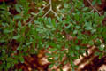
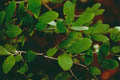
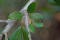
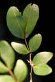
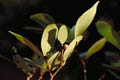
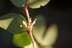

Common name in Singhalese : Gal mendora






Diagnostic characters
Botany & morphology
Regeneration
Ecology
Distribution
Trees up to 8 m tall; trunk fluted; bark smooth, thin, grey. Leaves uni-or bijugate.
Leaves compound, alternate, paripinnate with 2 pairs of leaflets, upper pair larger than lower; leaflets obliquely oblong to obovate-oblong, apex obtuse or retuse, base asymmetrically acute, 6 - 9 x 2 – 4 cm, glabrous, nitid on both surfaces; petiole and petiolule pulvinus. Small bud scales.
Inflorescence corymbiform pseudoracemes.
Flowers small, zygomorphic, bisexual, white but turning brown; calyx with 4 - 5 sepals; petals 5, free; stamens 10, filaments slender, ovary inserted, asymmetrically elliptical, style slender, stigma capitate.
Fruits ellipsoid, compressed, 3 – 2 cm, strongly rugose with lateral beak extending to about 6 mm long, crispate pubescent, 1 seeded.
Seed without endosperm, distributed by water currents. Germination epigeal.
As a back mangrove in coastal forests.
Sri Lanka , India , Malaysia, and northeastern Australia.
Top of the page